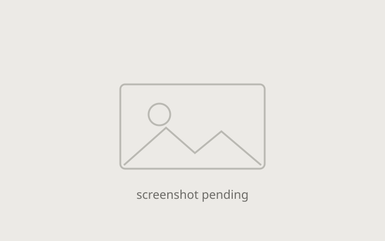

PandaMaps TTRPG Map Generator
A web app that procedurally generates battlemaps for Dungeons & Dragons and other tabletop RPGs. You set the parameters; it builds a map nobody has seen before, using OpenSimplex noise for terrain and rectangle accretion for room layout. React and TypeScript front end, Python back end, containerized with Docker.